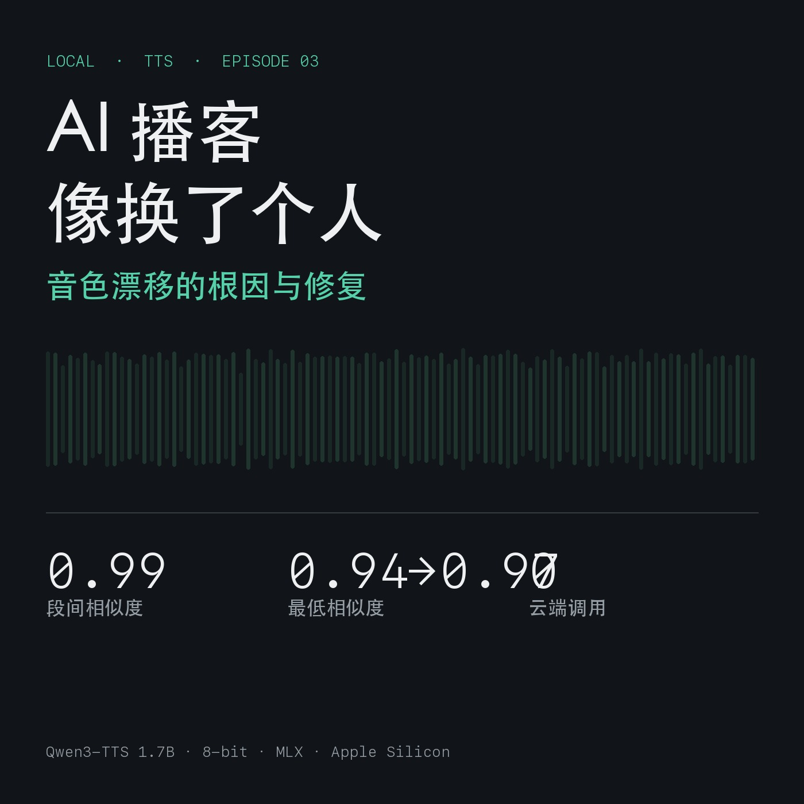

Local First · Episode 03
为什么你的 AI 播客像换了个人：音色漂移的根因与修复
2026-11-10 · 第 03 期配套文 · 一次真实的 bug 修复记录 起因：第 01 期发布后收到的第一条反馈——「句子之间音色不一致」
TL;DR
| 修复前（VoiceDesign） | 修复后（Base + 克隆 + 择优） | |
|---|---|---|
| 段间说话人相似度（两两均值） | 0.9768 | 0.9911 |
| 最低一对相似度 | 0.9393 | 0.9691 |
| 与质心相似度（最低段） | 0.9720 | 0.9818 |
| 语速变异系数 | 12.8% | 7.9% |
根因不是"模型不好"，而是用错了模型：VoiceDesign 权重没有 speaker encoder，每次请求都从文字描述重新采样一个声音——50 段就是 50 次独立采样。
1. 为什么"传了参考音频"没用
VoiceDesign 权重的 config.json 里 tts_model_type = voice_design，speaker_encoder_config 为 None。而代码里取参考音频的路径是：
speaker_embed = None
if ref_audio is not None and self.speaker_encoder is not None: # ← 这里是 None
speaker_embed = self.extract_speaker_embedding(ref_audio)
也就是说：传 ref_audio 不会报错，会被静默忽略。这是我最初踩的坑——以为钉住了音色，其实没有。
2. 怎么把"像不像同一个人"变成可测的数
Base 权重自带说话人编码器（ECAPA-TDNN，2048 维）。把每段音频压成一个向量，算两两余弦相似度：
emb = model.extract_speaker_embedding(mx.array(segment)[None, :])
sim = cosine(emb_a, emb_b) # 1.0 = 同一个人，0.9 以下人耳通常能察觉
对已发布的第 01 期（50 段，按报告时长精确切回）测量：
| 指标 | 数值 |
|---|---|
| 两两相似度 均值 | 0.9768 |
| 两两相似度 最低 | 0.9393 |
| 与质心相似度 最低 | 0.9720 |
| 基频中位数 | 107 Hz（区间 88–140 Hz） |
最差的几段集中在 33–46 字的中等长度段落，以及 6–10 字的短句。
口语结论：最低那一对 0.939，足够让听众觉得"这句换了个人"。
3. 修复：换权重 + 克隆 + 择优
3.1 换 Base 权重做 ICL 克隆
for result in model.generate(
text=segment, ref_audio="ref.wav", ref_text="参考音频的逐字稿",
lang_code="chinese", stream=False,
):
...
50 段共享同一个音色锚点，而不是 50 次独立采样。
3.2 每段采样 3 次，按说话人相似度择优
python3 scripts/tts_clone.py --script episodes/ep01/script_zh.txt \
--out audio/ep01 --ref ref/cand_1.wav --ref-text "..." \
--samples 3 --select speaker
每段生成 3 个候选，用 ECAPA 向量和参考音色的余弦相似度排序，取最高的一段；语速偏离目标 ±35% 的候选直接淘汰。代价是 3 倍算力（一期 10 分钟节目约 11 分钟），对这个场景完全不敏感。
3.3 逐段响度归一 + 首尾淡入淡出
这一步容易被忽略，但对"听起来像同一个人"贡献很大：
rms = np.sqrt(np.mean(a ** 2))
a = a * (TARGET_RMS / rms) # 每段统一到 -21 dBFS
a[:n] *= ramp; a[-n:] *= ramp[::-1] # 12 ms 淡入淡出，消除拼接爆音
不同段落的电平差 2–3 dB，人耳就会读成"忽远忽近"，进而怀疑"是不是换了人"。
4. 结果
| 指标 | 修复前 | 修复后 | 变化 |
|---|---|---|---|
| 说话人相似度（两两均值） | 0.9768 | 0.9911 | +0.014 |
| 说话人相似度（最低） | 0.9393 | 0.9691 | +0.030 |
| 与质心相似度（最低） | 0.9720 | 0.9818 | +0.010 |
| 语速 CV | 12.8% | 7.9% | −4.9 pt |
| 成片时长 | 9:43 | 8:49 | 更快 |
顺带一个发现：克隆模式下语速也变稳了（CV 12.8% → 7.9%），因为每段都对齐到同一段参考的说话习惯。
5. 一个意外发现：参考音频决定成片语速
同一个模型、同一段文字，只换参考音频：
| 参考音频 | 它的语速 | 克隆出来的语速 |
|---|---|---|
| cand_0（9.7 s / 36 字） | 223 字/分 | 279 字/分 |
| cand_1（11.8 s / 33 字） | 168 字/分 | 221 字/分 |
| slow（8.8 s / 36 字，指令写"语速明显偏慢"） | 245 字/分 | — |
结论：别找语速参数，找一段语速合适的参考录音。 参考音频的节奏会被一起学走。
6. 验收阈值（拿去就用）
| 指标 | 合格线 | 说明 |
|---|---|---|
| 说话人相似度（最低一对） | ≥ 0.97 | 低于此值，人耳大概率能听出跳变 |
| 与质心相似度（最低段） | ≥ 0.98 | 用来定位"该重跑的那一段" |
| 语速 CV | ≤ 10% | 超过就会"一会儿赶一会儿拖" |
| 逐段 RMS 偏差 | ≤ 2 dB | 超过会被读成"忽远忽近" |
7. 复现
# 1) 造一条参考音色（设计一次，之后复用）
# 用 VoiceDesign 生成 8–12 秒干净录音，连同逐字稿一起保存
# 2) 克隆 + 择优
python3 scripts/tts_clone.py --script episodes/ep03/script_zh.txt \
--out audio/ep03 --ref ref/cand_1.wav --ref-text "..." \
--samples 3 --select speaker
# 3) 验收：逐段量相似度 / 基频 / 语速
python3 scripts/diagnose_episode.py audio/ep03.m4a audio/ep03.report.json episodes/ep03/script_zh.txt
# 4) A/B 对照（VoiceDesign vs Clone）
python3 scripts/check_timbre.py
8. 局限
- ECAPA 相似度只覆盖"说话人身份"这一维，不覆盖音色亮度、气息、口型感；阈值是可用的代理，不等于人耳判断。
- 基频估计用自相关粗算，短句上容易出八度错误，基频标准差在长短混合时参考价值有限。
- 克隆会继承参考音频的缺陷（噪声、口音、气口）。参考必须干净。
- 修复后成片更快（221 → 240+ 字/分），需要在"参考选择"上手动调，没有直接的速度参数。
本期音频、前两期修复版、测量脚本与原始数据均在仓库内。如果你听出仍有跳变，请告诉我具体时间点——那说明我的阈值定得还不够严。